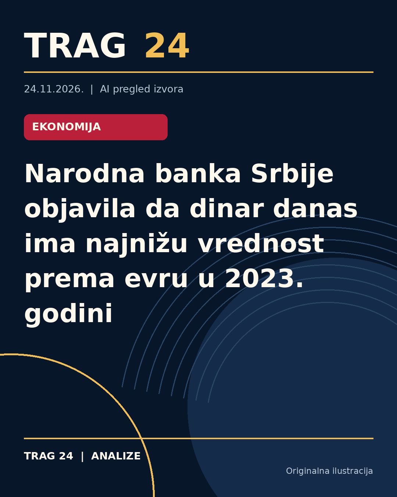

Narodna banka Srbije objavila da dinar danas ima najnižu vrednost prema evru u 2023. godini

ŠTA SE DOGODILO
Narodna banka Srbije (NBS) je objavila da je zvanični srednji kurs dinara prema evru danas 117,6503 dinara za jedan evro, što predstavlja najnižu vrednost domaće valute u odnosu na evro u ovoj godini.
HRONOLOGIJA
Najveća vrednost dinara prema evru u 2023. godini zabeležena je 5. januara, kada je za jedan evro bilo potrebno 117,3016 dinara. Tokom godine, kurs dinara se menjao, da bi danas zabeležio najniži nivo. U poređenju sa pre mesec dana, dinar je oslabio za oko 0,1 odsto, a na godišnjem nivou za 0,3 odsto.
ŠTA NAVODE IZVORI
Prema informacijama iz NBS koje prenose Nova.rs i Blic, kurs dinara je danas neznatno slabiji prema evru nego pre mesec dana i na godišnjem nivou. Takođe, Blic navodi da je dinar prema dolaru izgubio vrednost od 2,8 odsto u poslednjih mesec dana i 7,3 odsto od početka godine, dok je indikativni kurs dinara prema dolaru danas 107,8272 dinara za jedan dolar.
ŠTA JE POTVRĐENO
Potvrđeno je da je današnji kurs dinara prema evru 117,6503, što je najniža vrednost ove godine. Takođe, potvrđeno je da je dinar oslabio za 0,1 odsto u poređenju sa prethodnim mesecom i za 0,3 odsto u odnosu na početak godine. Informacije o kursu prema dolaru, uključujući godišnje i mesečne promene, takođe su potvrđene od strane NBS.
ŠTA NIJE POTVRĐENO
Nije potvrđeno da će ovaj trend slabljenja dinara prema evru ili dolaru nastaviti u narednom periodu, niti su date procene o razlozima ovih promena. Nije prikazana detaljna analiza ili komentari stručnjaka o budućem kretanju kursa.
ŠTA OSTАJE OTVORENO: Ostaje otvoreno pitanje kako će se kretati kurs dinara u narednim mesecima, kao i da li će događaji na međunarodnom tržištu valuta i domaći ekonomski faktori uticati na dalju promenu vrednosti dinara prema evru i dolaru.
Izvori
- https://nova.rs/vesti/biznis/pogledajte-danasnji-kurs-nbs-objavila-da-to-najmanja-vrednost-dinara-prema-evru-u-ovoj-godini/
- https://www.blic.rs/biznis/vesti/kurs-dinara-prema-evru-za-24novembar/s7rsft3
Ova analiza je pripremljena uz pomoć veštačke inteligencije na osnovu javno dostupnih izvora. Navodi izvora nisu nužno nezavisno potvrđeni.